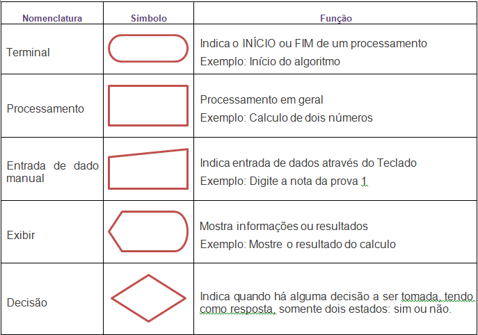

A lógica de programação é um conjunto de regras e conceitos utilizados para estruturar e resolver problemas computacionais de forma eficiente.
Ela é fundamental para o desenvolvimento de algoritmos e para a criação de software, permitindo que programadores raciocinem de maneira
estruturada e sequencial. Em resumo, a lógica de programação é a base que orienta a criação de códigos que serão interpretados e executados
por um computador.
Algoritmos são um conjunto finito de passos elementares que são aplicados sistematicamente até que a solução seja atingida.De forma simples, podemos
dizer que um algoritmo define o caminho que deve ser seguido para chegar até a solução de um determinado problema.
Pseudocódigo é uma forma de representar algoritmos e processos utilizando uma linguagem simples e próxima da linguagem natural. Ele não é uma linguagem
de programação executável, mas sim uma ferramenta que ajuda a planejar e expressar soluções algorítmicas antes de serem implementadas em uma linguagem
específica. O pseudocódigo combina elementos de linguagem natural com estruturas que se assemelham a uma linguagem de programação, facilitando a compreensão
do algoritmo.

É uma representação gráfica que mostra os passos lógicos de um processo. Ele é utilizado para descrever o fluxo de dados, ideias ou componentes que fluem através
de um sistema. Os fluxogramas são amplamente utilizados na análise, projeto, registro e controle de processos ou programas em muitos campos. Eles ajudam a otimizar
processos e a visualizar graficamente o fluxo de trabalho.

No diagrama de blocos, utilizamos formas e símbolos para representar diferentes tipos de ações, decisões e fluxos de um processo. Cada forma tem um significado específico. Algumas delas são:
As variáveis são os elementos da programação que permitem o armazenamento de valores na memória do computador e seu uso pelo programa. O conceito de variável inclui
quatro características: o nome usado pelo programa para a variável, o endereço de memória para o qual aquele nome aponta, o valor armazenado naquele endereço de
memória e o tipo de dado armazenado.